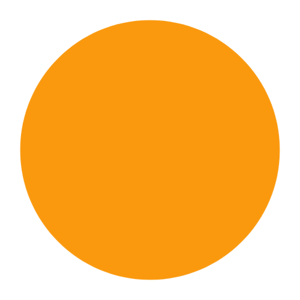

<div class="title">
  <h3>Creating circle patch or pot</h3>
  
</div>

<form #newCirclePatch="ngForm" autocomplete="off">
  <div class="form-group"
  [ngClass]="{'error': newCirclePatch.controls.patchName?.invalid && newCirclePatch.controls.patchName?.touched}">
    <label for="patchName">Patch Name:</label>
    <em *ngIf="newCirclePatch.controls.patchName?.invalid && newCirclePatch.controls.patchName?.touched"> *Required</em>
    <input (ngModel)="patchName" name="patchName" required type="text" class="form-control"
      placeholder="Name of your patch..." />
</div>

  <div class="form-group"
    [ngClass]="{'error': newCirclePatch.controls.diameter?.invalid && newCirclePatch.controls.diameter?.touched}">
    <label for="diameter">Diameter:</label>
    <em *ngIf="newCirclePatch.controls.diameter?.invalid && newCirclePatch.controls.diameter?.touched"> *Required</em>
    <input (ngModel)="diameter" name="diameter" required type="number"
      placeholder="Diameter..." />
  </div>
  <div class="buttons">
    <button id="cancel-button" mat-button type="button" class="btn btn-default" (click)="cancel()">Cancel</button>
    <button mat-button type="submit" class="save" (click)="saveCirclePatch(newCirclePatch.value)"
      [disabled]="newCirclePatch.invalid">
      Save</button>
      <em>{{notification}}</em>
  </div>
</form>
